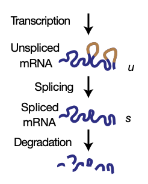
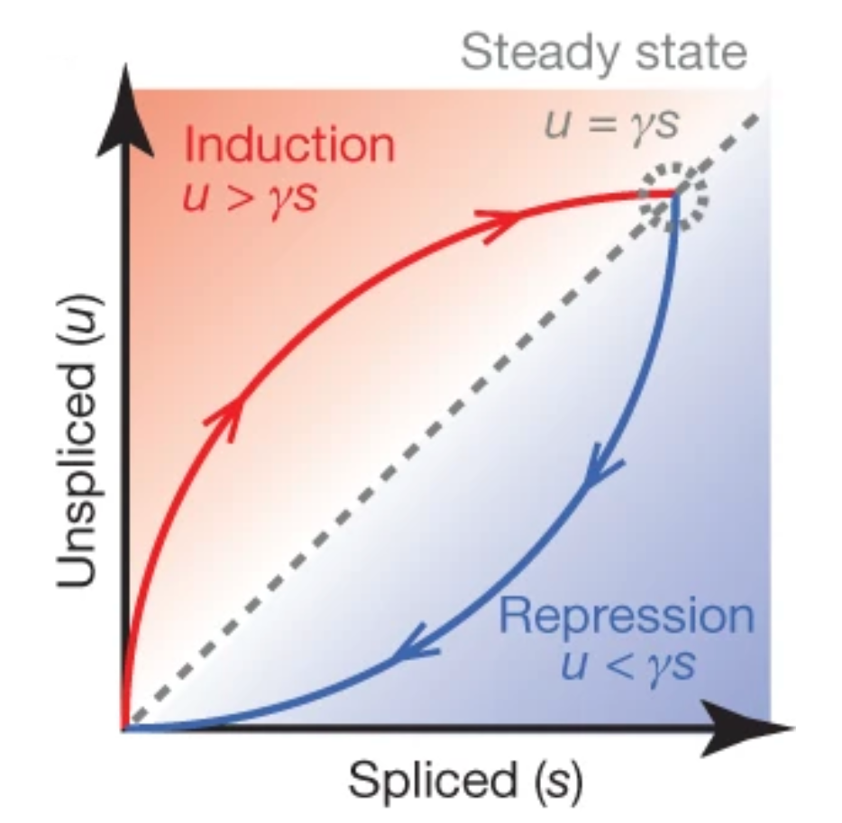
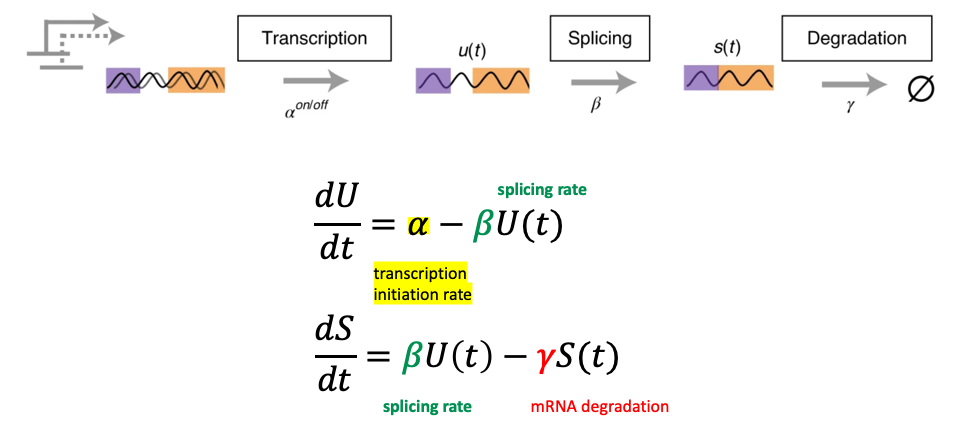
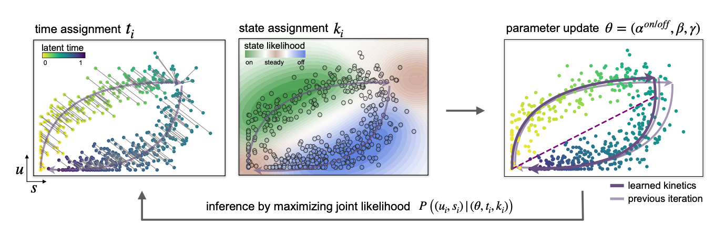
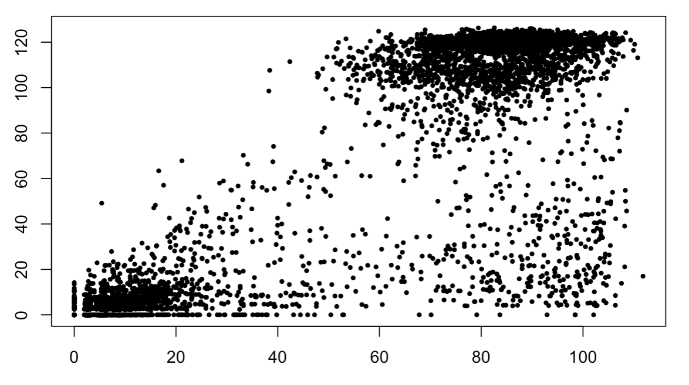
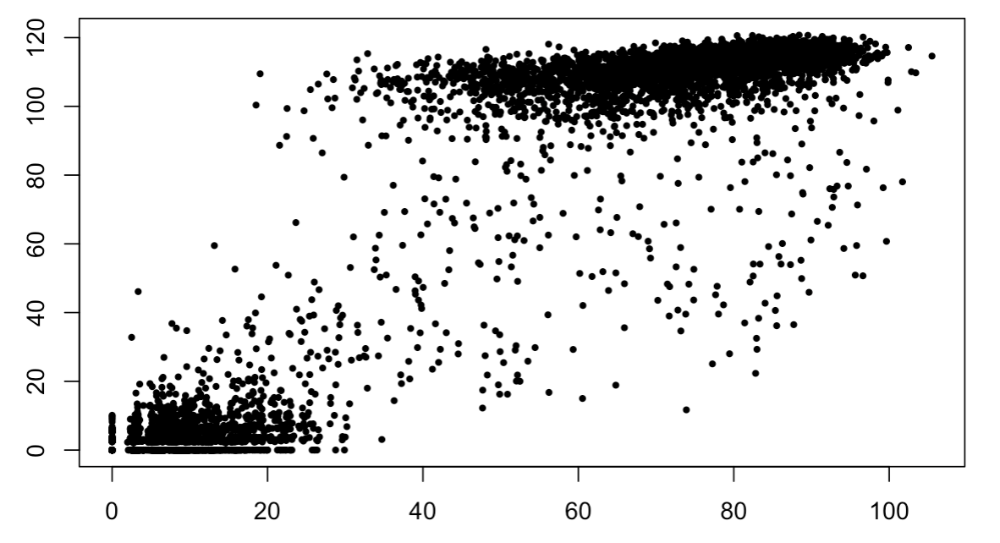

RNA velocity allows for the analysis of the change in the rate of gene expression in genes at a given time point given the spliced and unspliced mRNA counts. This enables cellular dynamics analysis without needing time-series single-cell RNA data.
mRNA lifecycle
Figure 1 shows the underlying model that is the basis for RNA velocity analysis. Essentially, the Lifecyle of a messenger RNA can be roughly explained by the transcription, splicing and degradation phases, where two main forms of mRNA, spliced and unspliced, can be found. At different points in time, different ratios of unspliced and spliced RNA could be present in a cell. Simply put, if there is more unspliced mRNA than spliced mRNA for a given gene, we can assume that this gene is about to be upregulated. We can therefore also assume that the gene is about to be downregulated if there is less unspliced mRNA than spliced mRNA.

Figure 1 - mRNA lifecycle model
This phenomenon is shown on the phase plot in figure 2, where a gene is in induction if the unspliced count is greater than the steady state slope. The opposite is also true, with repression of a gene. Using this model, and by obtaining this phase diagram for all genes, it would be possible to guess the future state of the cell.

Figure 2 - Unspliced vs spliced phase plot
Mathematical model
This model of mRNA lifecycle can be explained mathematically as shown in figure 3. Two main ordinary differential equations can be used to describe the mRNA lifecycle. These two equations include the transcription rate alpha which can depend on the on or off transcription state in the cell, the splicing rate beta, which is the rate of transformation of unspliced to spliced mRNA (assumed constant), and a degradation rate constant gamma which represents the breakdown of the spliced mRNA by the cell. The first equation essentially states that the rate of change of the unspliced mRNA is increased by the transcription rate alpha and is decreased by the splicing rate beta which is in accordance with the model shown in figure 1. Based on the same model, the second equation shows that rate of change of spliced RNA is increased by splicing rate beta and decreased by the degradation rate gamma.

Figure 3 - Mathematical model
Solving the equations
To obtain the RNA velocity (I.e., rate of change of spliced count) these two equations should be solved using a closed form solution. After inputting the unspliced and spliced count values obtained from single-cell RNA-seq data into our equations the remaining parameters can be estimated. More specifically, since the rate parameters (alpha, beta and gamma) and the latent variables (time and the on or off transcription state) can be inferred if either one is known, an expectation-maximization approach can be used. This is done by iteratively estimating rate parameters and the latent variables via maximum likelihood.
This is shown here in the three phase plots included in figure 4, where each dot represents a cell and the x and y axis are the spliced and unspliced RNA counts.
For an estimate of rate parameters shown on the far-right plot, time points can be assigned to each cell by minimizing the cell’s distance to the current phase trajectory, shown on the far-left. The transcriptional, on or off, states are found by associating a likelihood to the different segments on the trajectory, shown in the middle plot. Therefore, the green area would signify transcription being turned on, blue meaning turned off and the red area would represent the likelihood of a cell being in a steady state.

Figure 4 - Expectation-maximization
Obtaining Spliced and Unspliced RNA Counts
Downloading data
The first step of any type of analysis involves obtaining the required datasets. To perform RNA velocity analysis, we need both spliced and unspliced RNA count matrices, which are not always readily available for download in various databanks. In single-cell RNA-seq studies, it is much more common to find and download FASTQ files. To download FASTQ files, often stored in servers located in foreign countries providing very slow download speeds, it is helpful to resort to a compute cluster where parallel jobs can be run, to save you time and compute resources.
Converting FASTQ files to RNA counts
To transform FASQ files into spliced and unspliced count matrices, the STARsolo feature in the STAR program can be used. For this to work, the chemistry of the dataset should be known. Make sure that the FASTQ files are intact before proceeding with the conversion, as files could be not downloaded properly or completely.
Performing RNA Velocity Analysis
To perform the RNA velocity analysis, we have developed the DeltaVelocyto R package. Although the scVelo package (current state-of-the-art velocity analysis package) offers many additional features, it lacks a basic feature to perform a differential dynamical analysis between two datasets (eg. case and control). This limitation is addressed in the DeltaVelocyto package in addition to increased speed and option for better scalability.
Specifically, the DeltaVelocity package makes use of the R package “mmutilR” (https://github.com/YPARK/mmutilR) which contains a number of useful functions for processing single-cell RNA-seq data generated by 10x Genomics. Similar to DeltaVelocyto, mmutilR does not attempt to populate all data in memory and uses indexing to achieve scalable random access, allowing for a simple and memory efficient workflow.
The DeltaVelocyto package offers multiple ways of performing differential dynamical analysis. This includes an ANCOVA test, Cell-type-stratified analysis and a joint test method (both differential expression and differential velocity). Moreover, due to the presence of different velocity landscapes seen across cell types, DeltaVelocyto offers the option of a de novo cell type identification method using both the spliced and unspliced mRNA counts in a sample. The package also incorporates a method to reduce batch effects in velocity analysis using a method described by the Hansen Lab (https://www.hansenlab.org/velocity_batch).
Interpreting Case/Control Results
Methods
Loading data
#loading data for patients with the alzheimer's disease
case = DeltaVelocyto::combine(
"/Users/samtoussi/Downloads/MFC-B3-24-Cog4-Path1_L002_R1_001.fastq.gzSolo.out",
"/Users/samtoussi/Downloads/MFC-B3-23-Cog4-Path1_L001_R1_001.fastq.gzSolo.out",
"/Users/samtoussi/Downloads/MFC-B3-20-Cog1-Path1_L002_R1_001.fastq.gzSolo.out",
"/Users/samtoussi/Downloads/MFC-B3-19-Cog1-Path1_L001_R1_001.fastq.gzSolo.out")
#loading data for control patients
control = DeltaVelocyto::combine(
"/Users/samtoussi/Downloads/MFC-B3-22-Cog4-Path0_L002_R1_001.fastq.gzSolo.out",
"/Users/samtoussi/Downloads/MFC-B3-21-Cog4-Path0_L001_R1_001.fastq.gzSolo.out",
"/Users/samtoussi/Downloads/MFC-B3-18-Cog1-Path0_L002_R1_001.fastq.gzSolo.out",
"/Users/samtoussi/Downloads/MFC-B3-17-Cog1-Path0_L001_R1_001.fastq.gzSolo.out")
Pre-processing
#Select the top (most variable) n=1000 genes with a minimum of x=20 shared counts across cells
case = DeltaVelocyto::filter_and_norm(case)
control = DeltaVelocyto::filter_and_norm(control)
Analysis
#Fits a linear model of spliced and unspliced moments in a gene
slopeCase = DeltaVelocyto::lm(case, "SYT1")
slopeControl = DeltaVelocyto::lm(control, "SYT1")
#Finding index of gene of interest
gene = which(rownames(ladata[["Mu"]]) == "SYT1")
#plottinf the phase plot of the gene of interest in the case and control patients
plot(case[["Ms"]][gene,],ladata[["Mu"]][gene,], pch=19, cex = 0.5)
plot(control[["Ms"]][gene,],ladata[["Mu"]][gene,], pch=19, cex = 0.5)

Disease

Control
Contact
Lets get in touch and talk about exciting projects.